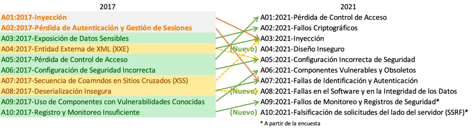

Introducción⚓︎
Bienvenido al OWASP Top 10 - 2021⚓︎

¡Bienvenido a la última entrega del OWASP Top 10! El OWASP Top 10 2021 ha sido totalmente renovado, con un nuevo diseño gráfico y una infografía de una sola página que puedes imprimir u obtener desde nuestra página web.
Un enorme agradecimiento a todos los que han contribuido con su tiempo y datos para esta iteración. Sin ustedes, esta entrega no sería posible. GRACIAS!
Qué ha cambiado en el Top 10 de 2021⚓︎
Hay tres nuevas categorías, cuatro categorías con cambios de nombre y alcance, y alguna consolidación en el Top 10 de 2021. Hemos cambiado los nombres cuando ha sido necesario para centrarnos en la causa principal en lugar del síntoma.

- A01:2021 - Pérdida de Control de Acceso sube de la quinta posición a la categoría con el mayor riesgo en seguridad de aplicaciones web; los datos proporcionados indican que, en promedio, el 3,81% de las aplicaciones probadas tenían una o más Common Weakness Enumerations (CWEs) con más de 318.000 ocurrencias de CWEs en esta categoría de riesgo. Las 34 CWEs relacionadas con la Pérdida de Control de Acceso tuvieron más apariciones en las aplicaciones que cualquier otra categoría.
- A02:2021 - Fallas Criptográficas sube una posición ubicándose en la segunda, antes conocida como A3:2017-Exposición de Datos Sensibles, que era más una característica que una causa raíz. El nuevo nombre se centra en las fallas relacionadas con la criptografía, como se ha hecho implícitamente antes. Esta categoría frecuentemente conlleva a la exposición de datos confidenciales o al compromiso del sistema.
- A03:2021 - Inyección desciende hasta la tercera posición. El 94% de las aplicaciones fueron probadas con algún tipo de inyección y estas mostraron una tasa de incidencia máxima del 19%, promedio de 3.37%, y las 33 CWEs relacionadas con esta categoría tienen la segunda mayor cantidad de ocurrencias en aplicaciones con 274.000 ocurrencias. El Cross-Site Scripting, en esta edición, forma parte de esta categoría de riesgo.
- A04:2021 - Diseño Inseguro nueva categoría para la edición 2021, con un enfoque en los riesgos relacionados con fallas de diseño. Si realmente queremos madurar como industria, debemos "mover a la izquierda" del proceso de desarrollo las actividades de seguridad. Necesitamos más modelos de amenazas, patrones y principios con diseños seguros y arquitecturas de referencia. Un diseño inseguro no puede ser corregida con una implementación perfecta debido a que, por definición, los controles de seguridad necesarios nunca se crearon para defenderse de ataques específicos.
- A05:2021 - Configuración de Seguridad Incorrecta asciende desde la sexta posición en la edición anterior; el 90% de las aplicaciones se probaron para detectar algún tipo de configuración incorrecta, con una tasa de incidencia promedio del 4,5% y más de 208.000 casos de CWEs relacionadas con esta categoría de riesgo. Con mayor presencia de software altamente configurable, no es sorprendente ver qué esta categoría ascendiera. El A4:2017-Entidades Externas XML(XXE), ahora en esta edición, forma parte de esta categoría de riesgo.
- A06:2021 - Componentes Vulnerables y Desactualizados antes denominado como Uso de Componentes con Vulnerabilidades Conocidas, ocupa el segundo lugar en el Top 10 de la encuesta a la comunidad, pero también tuvo datos suficientes para estar en el Top 10 a través del análisis de datos. Esta categoría asciende desde la novena posición en la edición 2017 y es un problema conocido que cuesta probar y evaluar el riesgo. Es la única categoría que no tiene ninguna CVE relacionada con las CWEs incluidas, por lo que una vulnerabilidad predeterminada y con ponderaciones de impacto de 5,0 son consideradas en sus puntajes.
- A07:2021 - Fallas de Identificación y Autenticación previamente denominada como Pérdida de Autenticación, descendió desde la segunda posición, y ahora incluye CWEs que están más relacionadas con fallas de identificación. Esta categoría sigue siendo una parte integral del Top 10, pero el incremento en la disponibilidad de frameworks estandarizados parece estar ayudando.
- A08:2021 - Fallas en el Software y en la Integridad de los Datos es una nueva categoría para la edición 2021, que se centra en hacer suposiciones relacionadas con actualizaciones de software, los datos críticos y los pipelines CI/CD sin verificación de integridad. Corresponde a uno de los mayores impactos según los sistemas de ponderación de vulnerabilidades (CVE/CVSS, siglas en inglés para Common Vulnerability and Exposures/Common Vulnerability Scoring System). La A8:2017-Deserialización Insegura en esta edición forma parte de esta extensa categoría de riesgo.
- A09:2021 - Fallas en el Registro y Monitoreo previamente denominada como A10:2017-Registro y Monitoreo Insuficientes, es adicionada desde el Top 10 de la encuesta a la comunidad (tercer lugar) y ascendiendo desde la décima posición de la edición anterior. Esta categoría se amplía para incluir más tipos de fallas, es difícil de probar y no está bien representada en los datos de CVE/CVSS. Sin embargo, las fallas en esta categoría pueden afectar directamente la visibilidad, las alertas de incidentes y los análisis forenses.
- A10:2021 - Falsificación de Solicitudes del Lado del Servidor es adicionada desde el Top 10 de la encuesta a la comunidad (primer lugar). Los datos muestran una tasa de incidencia relativamente baja con una cobertura de pruebas por encima del promedio, junto con calificaciones por encima del promedio para la capacidad de explotación e impacto. Esta categoría representa el escenario en el que los miembros de la comunidad de seguridad nos dicen que esto es importante, aunque no está visualizado en los datos en este momento.
Metodología⚓︎
Esta entrega del Top 10 está más orientada a los datos que nunca, pero no a ciegas. Hemos seleccionado ocho de las diez categorías a partir de los datos aportados y dos categorías a partir de la encuesta de la comunidad del Top 10 a un alto nivel. Hacemos esto por una razón fundamental, mirar los datos aportados es mirar al pasado. Los investigadores de seguridad en aplicaciones se toman su tiempo para encontrar nuevas vulnerabilidades y nuevas formas de probarlas. Se necesita tiempo para integrar estas pruebas en las herramientas y los procesos. Para el momento en que podamos probar de forma fiable una vulnerabilidad a escala, es probable que hayan pasado años. Para compensar este punto de vista, utilizamos una encuesta de la comunidad en la que preguntamos a los expertos en seguridad y desarrollo de aplicaciones que se encuentran en primera línea cuáles son, en su opinión, las vulnerabilidades esenciales que los datos aún no muestran.
Hay algunos cambios críticos que hemos adoptado para seguir madurando el Top 10.
Cómo se estructuran las categorías⚓︎
Algunas categorías han cambiado con respecto a la anterior entrega del OWASP Top Ten. A continuación se presenta un resumen de alto nivel de los cambios de categoría.
Los trabajos anteriores de recopilación de datos se centraban en un subconjunto prescrito de aproximadamente 30 CWEs, con un campo que solicitaba hallazgos adicionales. Nos dimos cuenta de que las organizaciones se centraban principalmente en esas 30 CWEs y rara vez añadían otras CWEs que veían. En esta iteración, lo abrimos y solo pedimos datos, sin ninguna restricción sobre las CWEs. Solicitamos el número de aplicaciones analizadas para un año determinado (a partir de 2017) y el número de aplicaciones con al menos una instancia de una CWE encontrada en las pruebas. Este formato nos permite rastrear la prevalencia de cada CWE dentro de la población de aplicaciones. Ignoramos la frecuencia para nuestros propósitos; aunque puede ser necesaria para otras situaciones, solo oculta la prevalencia real en la población de aplicaciones. El hecho de que una aplicación tenga cuatro instancias de una CWE o 4.000 instancias no forma parte del cálculo para el Top 10. Hemos pasado de aproximadamente 30 CWEs a casi 400 CWEs para analizar en el conjunto de datos. Tenemos previsto realizar análisis de datos adicionales como complemento en el futuro. Este aumento significativo en el número de CWEs hace necesario cambiar la estructura de las categorías.
Pasamos varios meses agrupando y clasificando las CWEs y podríamos haber seguido durante más tiempo. En algún momento tuvimos que parar. Hay tipos de CWE de causa raíz y de síntoma, donde los de causa raíz serían "Falla Criptográfica" y "Configuración de Seguridad Incorrecta" en contraste con los de síntoma como "Exposición de Datos Sensibles" y "Denegación de Servicio". Hemos decidido centrarnos en la causa raíz siempre que sea posible, ya que es más lógico para proporcionar orientación sobre la identificación y la reparación. Centrarse en la causa raíz en lugar de en el síntoma no es un concepto nuevo; el Top Ten ha sido una mezcla de síntoma y causa raíz. Las CWEs también son una mezcla de síntoma y causa raíz; simplemente estamos siendo más explícitos al respecto y lo señalamos. Hay un promedio de 19,6 CWEs por categoría en esta entrega, con el límite inferior de 1 CWE para A10:2021-Falsificación de Solicitudes del Lado del Servidor (SSRF) a 40 CWEs en A04:2021-Diseño Inseguro. Esta actualización en la estructura de las categorías ofrece beneficios adicionales de capacitación, ya que las empresas pueden centrarse en las CWE que tienen sentido para un lenguaje/framework.
Cómo se utilizan los datos para seleccionar las categorías⚓︎
En 2017, seleccionamos las categorías según la tasa de incidencia para determinar la probabilidad, y luego las clasificamos según la discusión del equipo basada en décadas de experiencia respecto a la Explotabilidad, la Detectabilidad (también probabilidad) y el Impacto técnico. Para 2021, queremos utilizar los datos de Explotabilidad e Impacto (técnico) si es posible.
Descargamos OWASP Dependency Check y extrajimos las puntuaciones de CVSS de Explotación e Impacto agrupadas por CWEs relacionadas. Nos costó bastante investigación y esfuerzo, ya que todas las CVEs tienen puntuaciones CVSSv2, pero hay fallos en CVSSv2 que CVSSv3 debería solucionar. A partir de cierto momento, a todas las CVEs se les asignó también una puntuación CVSSv3. Además, los rangos y fórmulas se han actualizado entre CVSSv2 y CVSSv3.
En CVSSv2, tanto Explotabilidad como Impacto técnico podían llegar a 10,0, pero la fórmula los rebajaba al 60% para Explotabilidad y al 40% para Impacto técnico. En CVSSv3, el máximo teórico se limitó a 6,0 para Explotabilidad y 4,0 para Impacto técnico. Con la ponderación considerada, la puntuación de Impacto Técnico se elevó, casi un punto y medio en promedio en CVSSv3, y la Explotabilidad se redujo casi medio punto.
Hay 125 mil registros de una CVE mapeadas a una CWE en los datos de la Base de Datos Nacional de Vulnerabilidades (NVD) extraídos del OWASP Dependency Check, y hay 241 CWEs únicas mapeadas a una CVE. 62 mil mapeos de CWE tienen una puntuación CVSSv3, lo cual representa aproximadamente la mitad de la población en el conjunto de datos.
Para el Top Ten 2021, calculamos las puntuaciones promedio de explotabilidad e impacto técnico de la siguiente manera. Agrupamos todas las CVEs con puntuaciones CVSS por CWE y ponderamos las puntuaciones de explotabilidad e impacto técnico por el porcentaje de la población que tenía CVSSv3 + la población restante de puntuaciones CVSSv2 para obtener una media global. Mapeamos estos promedios a las CWEs en el conjunto de datos para utilizarlos como puntuación de Explotabilidad e Impacto (Técnico) para la otra mitad de la ecuación del riesgo.
¿Por qué no solo los datos estadísticos puros?⚓︎
Los resultados de los datos se limitan principalmente a lo que podemos comprobar de forma automatizada. Si hablas con un profesional experimentado de la seguridad de las aplicaciones, te hablará de las cosas que encuentra y de las tendencias que ve y que aún no están en los datos. Se necesita tiempo para desarrollar metodologías de pruebas para ciertos tipos de vulnerabilidades y más tiempo aún para que esas pruebas sean automatizadas y ejecutadas contra una gran población de aplicaciones. Todo lo que hallamos está mirando al pasado y puede que falten algunas tendencias del último año, que aún no están presentes en los datos.
Es por eso que solo recogemos ocho de las diez categorías de los datos, porque están incompletos. Las otras dos categorías proceden de la encuesta a la comunidad del Top 10. Esto permite a los profesionales de primera línea votar por los que ellos consideran que son los mayores riesgos y que podrían no estar en los datos (y puede que nunca se expresen en ellos).
¿Por qué la tasa de incidencia en lugar de la frecuencia?⚓︎
Hay tres fuentes principales de datos. Las identificamos como Herramienta asistida por Humanos (HaT), Humano asistido por Herramientas (TaH) y Herramientas en bruto.
Herramientas y HaT son generadores de hallazgos de alta frecuencia. Las herramientas buscarán vulnerabilidades específicas e intentarán incansablemente encontrar cada instancia de esa vulnerabilidad y generarán un elevado número de hallazgos para algunos tipos de vulnerabilidades. Por ejemplo, el Cross-Site Scripting, suele ser de dos tipos: o bien es un error menor y aislado, o bien es un problema sistémico. Cuando se trata de un problema sistémico, el número de hallazgos puede ser de miles para una sola aplicación. Esta alta frecuencia ahoga a la mayoría de las demás vulnerabilidades encontradas en los informes o datos.
Por otro lado, TaH encontrará una gama más amplia de tipos de vulnerabilidades, pero con una frecuencia mucho menor debido a las limitaciones de tiempo. Cuando los humanos prueban una aplicación y ven algo como un Cross-Site Scripting, normalmente encontrarán tres o cuatro instancias y se detendrán. Pueden determinar un hallazgo sistémico y escribir una recomendación para corregirlo a gran escala en la aplicación. No hay necesidad (ni tiempo) de encontrar cada instancia.
Supongamos que tomamos estos dos conjuntos de datos distintos y tratamos de fusionarlos por su frecuencia. En ese caso, los datos de Herramientas y HaT ahogarán los datos más precisos (aunque amplios) de TaH y es en buena parte la razón por la que algo como el Cross-Site Scripting ha sido clasificado tan alto en muchas listas cuando el impacto es generalmente bajo o moderado. Se debe al gran volumen de hallazgos. (El Cross-Site Scripting es además razonablemente fácil de probar, por lo que hay muchas más pruebas para ello).
En 2017, introdujimos el uso de la tasa de incidencia en su lugar para dar una nueva mirada a los datos y combinar de manera transparente los datos de Herramientas y HaT con los datos de TaH. La tasa de incidencia se refiere al porcentaje de la población de aplicaciones que tiene al menos una instancia de un tipo de vulnerabilidad. No nos importa si fue algo puntual o sistémico. Eso es irrelevante para nuestros objetivos; solo necesitamos saber cuántas aplicaciones tenían al menos una instancia, lo cual ayuda a proporcionar una visión más clara de los hallazgos de las pruebas a través de múltiples tipos de pruebas sin ahogar los datos en resultados de alta frecuencia. Esto corresponde a una visión relacionada con el riesgo, ya que un atacante solo necesita una instancia para atacar una aplicación con éxito a través de dicha categoría.
¿Cuál es su proceso de recopilación y análisis de datos?⚓︎
En el Open Security Summit de 2017 formalizamos el proceso de recopilación de datos del OWASP Top 10. Los líderes del OWASP Top 10 y la comunidad pasaron dos días trabajando en la formalización de un proceso de recopilación de datos transparente. La edición de 2021 es la segunda vez que utilizamos esta metodología.
Publicamos la solicitud de datos a través de las redes sociales de las que disponemos, tanto del proyecto como de OWASP. En la página del proyecto, enumeramos los elementos y la estructura de los datos que buscamos y cómo presentarlos. En el proyecto de GitHub, disponemos de archivos de ejemplo que sirven como plantillas. También, en caso necesario, trabajamos con las organizaciones para ayudarles a determinar la estructura y el mapeo con las CWEs.
Recibimos estos datos de organizaciones que son proveedores de servicios de seguridad, proveedores de bug bounty y organizaciones que aportan datos de pruebas internas. Una vez que recibimos los datos, los cargamos y realizamos un análisis fundamental de las categorías de riesgo de las CWEs. Hay un solapamiento entre algunas CWEs, y otros están muy relacionados (por ejemplo, las fallas criptográficas). Toda decisión relacionada con los datos en bruto se ha documentado y publicado para ser abiertos y transparentes en cuanto a la normalización de los datos.
Analizamos las ocho categorías con las tasas de incidencia más altas para incluirlas en el Top 10. También miramos los resultados de la encuesta a la comunidad del Top 10 para ver cuáles pueden estar ya presentes en los datos. Las dos más votadas que no estén ya presentes en los datos serán seleccionadas para los otros dos puestos del Top 10. Una vez seleccionados las diez, aplicamos factores generalizados de explotabilidad e impacto; para así poder ordenar el Top 10 2021 en función del riesgo.
Data Factors⚓︎
Hay factores de datos que se enumeran para cada una de las 10 categorías, aquí está lo que significan:
- CWEs mapeadas: El número de CWEs asignadas a una categoría por el equipo del Top 10.
- Tasa de incidencia: La tasa de incidencia es el porcentaje de aplicaciones vulnerables a esa CWE de la población analizada por esa organización para ese año.
- Cobertura (de pruebas): El porcentaje de aplicaciones que han sido testadas por todas las organizaciones para una determinada CWE.
- Explotabilidad ponderada: La sub-puntuación de explotabilidad de las puntuaciones CVSSv2 y CVSSv3 asignadas a las CVEs mapeadas a las CWEs, normalizados y colocados en una escala de 10 puntos.
- Impacto ponderado: La sub-puntuación de Impacto de las puntuaciones CVSSv2 y CVSSv3 asignadas a las CVEs mapeadas a las CWEs, normalizados y colocados en una escala de 10 puntos.
- Total de ocurrencias: Número total de aplicaciones en las que se han encontrado las CWEs asignados a una categoría.
- Total de CVEs: Número total de CVEs en la base de datos del NVD que fueron asignadas a las CWEs asignados a una categoría.
Gracias a nuestros proveedores de datos⚓︎
Las siguientes organizaciones (junto con algunos donantes anónimos) han tenido la amabilidad de donar datos de más de 500.000 aplicaciones para hacer de este el mayor y más completo conjunto de datos sobre seguridad de las aplicaciones. Sin ustedes, esto no sería posible.
- AppSec Labs
- Cobalt.io
- Contrast Security
- GitLab
- HackerOne
- HCL Technologies
- Micro Focus
- PenTest-Tools
- Probely
- Sqreen
- Veracode
- WhiteHat (NTT)
Gracias a nuestro patrocinador⚓︎
El equipo del OWASP Top 10 2021 agradece el apoyo financiero de Secure Code Warrior y Just Eat.